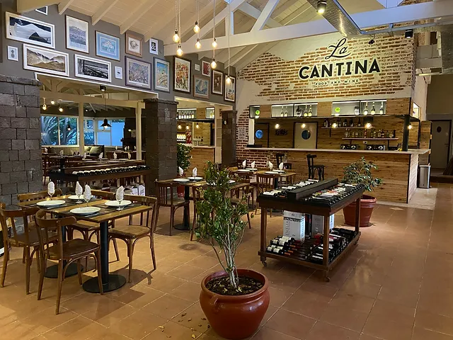

Nuestro viaje a pinamar
La ruta
La Ruta 2 en sentido a Pinamar es un recorrido de 320 km que une Buenos Aires con la costa atlántica. Atraviesa pampas y ciudades costeras como Mar del Plata y Villa Gesell. Luego de lluvias intensas, el estado de la ruta es complicado, con calles inundadas y tramos de ripio. Sin embargo, en verano, la ruta está en mejor estado, permitiendo un viaje seguro y rápido. Es importante tener en cuenta las condiciones climáticas y el estado de la ruta antes de emprender el viaje.
El clima
En julio, Pinamar experimentó un clima fresco y lluvioso, típico del invierno en la costa argentina. Las temperaturas oscilaron entre 3°C y 12°C, con una humedad relativa del 70%. Hubo varios días de lluvia, con un total de 60 mm de precipitación. El viento sopló moderado, con ráfagas de hasta 50 km/h. En general, el clima fue ideal para disfrutar de actividades al aire libre, como caminatas y paseos por la playa, aunque con un abrigo para resguardarse del frío.
La comida
¡Comer en Pinamar es un placer! La ciudad ofrece una variedad de opciones gastronómicas para todos los gustos. No te pierdas de probar el pescado fresco y los mariscos en lugares como: "La Cantina" en la playa de Ostende, donde disfrutarás de un ceviche imperdible. "El Mesón" en el centro, famoso por sus raviolones caseros y su atención de primera. ¡Buen provecho!
